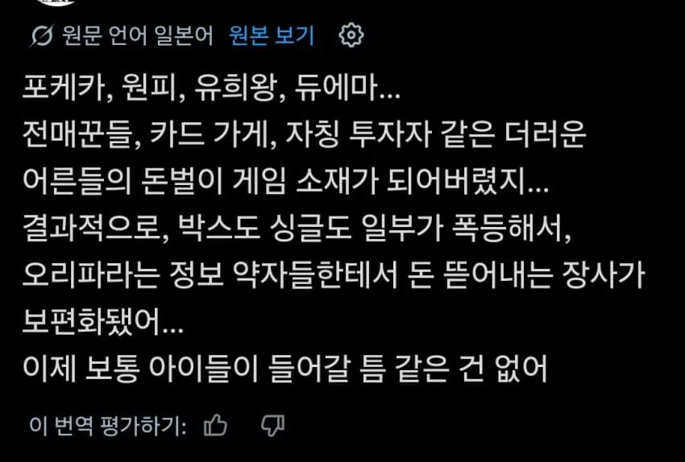

.

.

디지몬은 싸게 할수있다구~~
대놓고 비싼카드가 없는건 아닌데 대체적으로 싼편
카드게임은 그냥 온라인으로 하는게 나음
오프라인의 그 맛이 없어...
한국에서는 모든 것이 저렇게 변하는 것 같은데
"원본언어 일본어" 그냥 동아시아특인듯
티켓팅부터 맛집까지..
한국은 저정도까진 아님 미국 일본이 미친수준임 이유 한국카드는 돈이 안됨
누가보면 그레이딩회사가 우리나라껀줄?
실사용 팩을 따로 맹들어 주면 안되나 나도 최근에 모으는데
솔직히 봉입률도 창렬인데 팩은 ㅈㄴ 비싸고
좀 쓸만한 스트 같은거 있으면 존나 쓸어가서 사지도 못하고 불만 많어
그런것도 다 있음
일단 포케카는 아예 완덱도 공식에서 팔아주자너
걍 레어도 다 커먼만 있는 실사용카드만 꽉꽉쑤셔넣은팩 이야기면 사실상 그게가끔나오는 개혜자 스트여서 어떻게하는게 맞는지 모르겠음
이미 있어
최초 TCG인 MTG도 재수록 팩 나올 때 왜 냈던 카드 재록해서 카드 가치 떨어트리냐는 항의 못 이기고 이러이러한 카드들은 절대 재수록 안 할게요 하고 발표한 적 있으니 옛날부터 그랬음. 이게 1996년인가 그럴 거임.
알리에서짭안파나
그... 이런식의 논조는 누칼협때 이미 지나갔어요.
닉값
피해를 주지 ㅋㅋㅋㅋ
관련없는 사람이 와서 가격만 뻥튀기 시키는데
판매자가 좆같이 판매하는게 아니라 좆같은 되팔이들땜에 시장 교란이 되는건데 비판도하지말고 걍 하지말라네 ㅋ
쿨찐이야 너
곧 NFT 꼴 날듯... 카드깡 하는 애들 현타 와서 많이 접더라.. 인스타나 유튜브 등 좋은 카드는 나올라면 박스를 수백개 까야 나오는데.. 한두개 까서 나오지가 않음... ( 한박스당 최소 5만원 이상 ) 한박스 까서 좋은거 안나오면 5만원 잃었음 청년 ㅋㅋㅋ 일본판은 더 비쌈 15만원 이상 ㅋㅋㅋㅋㅋㅋㅋ
지랄하네 우리가 만든 세상임
장래희망 과학자 소방관 적던 순수했던 우리니까 TCG를 놀이로 즐기던 비율이 높았던 거고
돈돈거리면서 효율만 추구하는 세상에 살아가는 아이들에겐 저런 놀이문화가 생기는 거고
혀를 끌끌 찰 게 아니라 반성할 줄 알아야지
아이들은 안한다니까
니가 말하는 순수했다는 애들이 커서 30-40대어른들 되서 존나 비싸게 다 산다고 그래서 요즘 애들은 못한다는데 뭔 씨발 문해력 좆박은 틀딱같은 소리냐
맞네 잘못일겅다
4줄이나 되는 긴 댓글로 일침 놓기 전에 일단 본문 문맥 파악부터 올바르게 하는 습관을 들이는 게 본인 품격이 오르지 않을까?
품격챙기고 글 집중해서 읽기에는 바빴어
포켓몬카드는 껍질까는게 컨텐츠의 전부아님? 가지고 노는 영상을 단 한개도 못봄 ㅋㅋㅋ
'뽑기의 즐거움'에 정신을 못차리는
카드 미친듯이 모으는 애들 봤는데 게임 안해
그냥 모으는거야 사고 판 차액으로 돈벌이 하려고
되팔이 새끼들이랑 다를께 없어
어떤 취미든간에 되팔이가 끼는순간 걍 취미 즐기는 사람들은 좆같아짐 ㄹㅇ
이거 ㄹㅇ인게, 건프라 초딩때 MG 페가수스 퍼건 재밌게 만든 기억있어서, 최근에 다시 해볼까했는데 되팔이들이 이걸로 재태크한다고해서 그냥 안하기로함.
유튜버 로건 폴 욕하면 된다.
이 새끼가 자기 어릴때 포켓몬 카드 못모은게 한이라서, 다 모으겠다고. 돈 지랄하면서 수집했는데, 갑자기 팔로워들이 존나게 사대니깐 NFT스캠하던 버릇 못버리고 장사 시작함. 그래서 포켓몬카드 폭등 시작했고, 다른 TCG에도 영향이 가는거임.
초등학생 때 500원 주고 카드팩 사고, 쉬는 시간, 점심 시간, 학교 끝나고 유희왕 하고 놀았는데....
카드게임만 그런게 아니라 취미생활에 되팔이들 들어와서 분위기 씹창내면 진짜 개짜증남
카드 되팔이가 좆같다구요?
그런 여러분들을 위해서 준비했읍니다 하스스톤!
미국 포켓몬 오프라인 이벤트 다녀온 적 있는데, 전부 20대~40대였고...
아이랑 동행하는 사람들도 핑계로 같이 나온 삼촌 이모들 뿐이었음...
내 유희왕 카드 자꾸 되팔라고 주위사람들이 말하는데 내 추억을 왜 파냐 ㅅㅂ
ㅋㅋ 시발 요즘 tcg샵에도 딱 봐도 대가리 다 벗겨진 포티행님들 와서 문제내는 가게들 늘었다더라 이런게 늘어야됨
그치만 이건 비단 한국뿐만 아니라 세계적인 현상이고